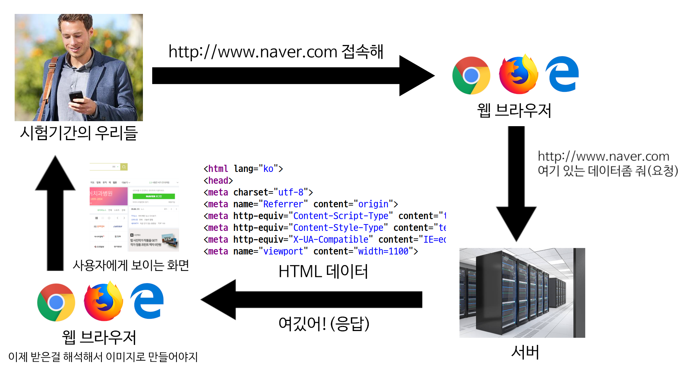

지금까지 우리는 HTML, CSS, JavaScript를 통해 웹 페이지가, 어떤 식으로 작성되는지를 알아보았다. 하지만 이렇게 작성된 페이지는 해당 파일을 직접 열어서 확인해야하기 때문에, 파일을 디스크에 직접 저장하고 있어야한다.
하지만 보통 웹 페이지는 해당 파일이 저장되지 않은 장치에서도 네트워크를 통해 접속할 수 있어야한다. 이를 위해 사용하는 것이 HTTP다.
HTTP는 클라이언트가 서버에게 요청 주소, 헤더, 데이터 등을 포함한 요청 메시지를 보내면, 서버는 해당 메시지를 통해 사용자가 원하는 리소스(HTML, CSS, JavaScript 등)를 응답 메시지로 보낸다.
Flask는 파이썬을 통해 HTTP 서버를 제작할 수 있는 프레임워크다.
pip install Flask
from flask import Flask
app = Flask(__name__)
@app.route("/")
def hello():
return "Hello, World!"
@app.route("/bye")
def bye():
return "Goodbye!"http://호스트/경로
URL은 호스트와 경로로 구성되어 있다. 호스트는 접근할 위치를 나타내는 IP 혹은 도메인을 입력하고, 경로는 해당 위치에서 가져올 리소스를 나타낸다.
Flask 앱에서 함수를 만들어 app.route를 데코레이터로 경로를 매개변수로 실행시켜주면 해당 경로로 접속하면 해당 함수의 리턴값이 응답 메시지로 보내진다.
이러한 경로마다 실행 함수를 설정해주는 것을 라우팅이라고 한다.
라우팅 시, 경로를 통해서 매개변수를 입력받을 수 있다.
from flask import Flask
app = Flask(__name__)
@app.route("/<name>")
def hello(name):
return "Hello, " + name + "!"
@app.route("/bye/<name>/<message>")
def bye(name, message):
print(message)
return "Goodbye, " + name + "!"HTTP가 데이터를 서버에 전송하는 방법은 여러가지가 있으며 대표적으로 GET 방식과 POST 방식이 있다.
GET 방식의 경우 데이터를 URL에 포함시켜 전송하는 방법이고, POST 방식은 요청 메세지에 Body라는 필드에 포함시켜서 전송하여 URL에 데이터가 드러나지 않는 방식이다.
from flask import Flask, request
app = Flask(__name__)
@app.route("/get")
def get():
keyword = ""
if 'keyword' in request.args:
keyword = request.args['keyword']
return """
<!DOCTYPE html>
<html>
<head>
<meta charset="utf-8" />
<title></title>
</head>
<body>
""" + keyword + """
<form method="GET">
<input type="text" name="keyword" />
<input type="submit" value="검색" />
</form>
</body>
</html>
"""
@app.route("/post", methods=["GET", "POST"])
def post():
keyword = ""
if 'keyword' in request.form:
keyword = request.form['keyword']
return """
<!DOCTYPE html>
<html>
<head>
<meta charset="utf-8" />
<title></title>
</head>
<body>
""" + keyword + """
<form method="POST">
<input type="text" name="keyword" />
<input type="submit" value="검색" />
</form>
</body>
</html>
"""Flask에서는 기본적으로 GET 방식을 사용한다. 허용하는 메소드를 변경하기 위해서는 라우팅할 때, methods 옵션을 설정해주면 된다.
from flask import Flask, request
app = Flask(__name__, static_url_path='/static', static_folder='static')
@app.route('/')
def hello():
return "Hello, World!"Flask 앱 생성 시, static_url_path 옵션과 static_folder 옵션을 통해서 정적 파일을 사용할 수 있다.
이를 통해서 CSS나 JavaScript 같은 파일 로드할 수 있다.